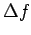
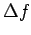
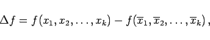
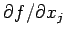
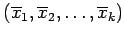
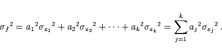

Inhalt Index DeskTop Bronstein

 Wahrscheinlichkeitsrechnung und Mathematische Statistik Theorie der Meßfehler Fehlerfortpflanzung und Fehleranalyse Gaußsches Fehlerfortpflanzungsgesetz
Wahrscheinlichkeitsrechnung und Mathematische Statistik Theorie der Meßfehler Fehlerfortpflanzung und Fehleranalyse Gaußsches Fehlerfortpflanzungsgesetz


Da die Fehler relativ kleine Änderungen der unabhängigen Variablen darstellen, kann die Funktion  in der Nähe der Mittelwerte
in der Nähe der Mittelwerte  durch den Linearanteil ihrer TAYLOR-Entwicklung mit den Koeffizienten aj angenähert werden, so daß für ihren Fehler  gilt:
durch den Linearanteil ihrer TAYLOR-Entwicklung mit den Koeffizienten aj angenähert werden, so daß für ihren Fehler  gilt:
|  | (16.225a) |
wobei die partiellen Ableitungen  an der Stelle  zu nehmen sind.
Streuung und Standardabweichung der Funktion ergeben sich zu
|  | (16.226) |